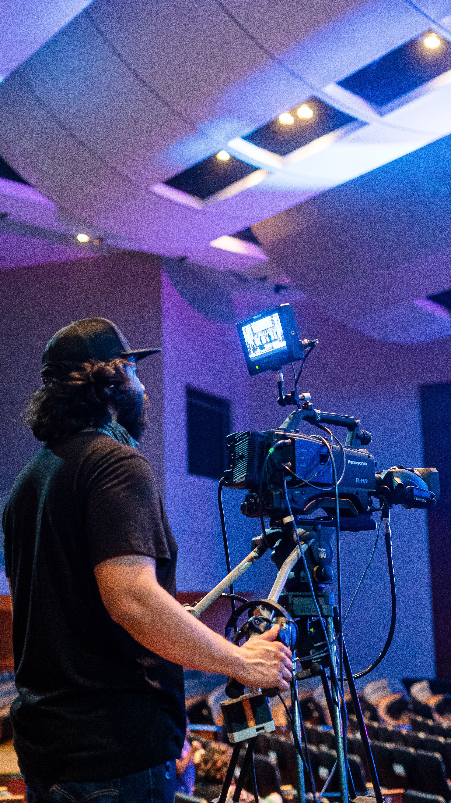
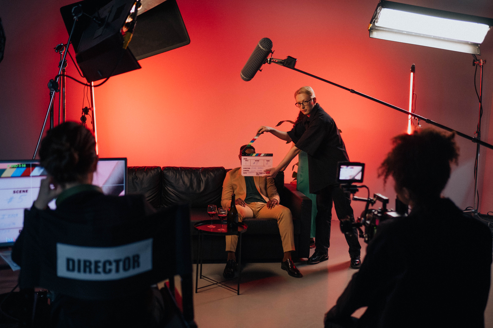
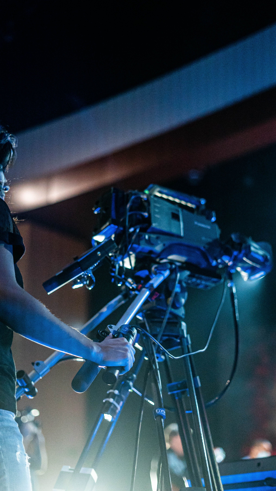

The Basics of Production



Here is the fun part. You get to shoot your movie! Below are a couple tips and tricks to keep you set running smoothly.
1. Respect the Chain of Command
Make sure you are respect the chain of command on set. The director has the final say on set. Additionally, each department should report to their department head.
2. Be Patient
It can sometimes take a long time to get a shot just right, so please have patience. Everyone on the team is doing the best they can, so be respectful.
3. Respect the 1st AD Schedule
Your first AD spent a lot of time making a schedule to make sure the entire shoot gets done. Make sure you listen when they tell you that the team needs to move on.
4. Respect the Equipment
You probably rented your equipment or borrowed it from somewhere. Treat it with respect! Also, you may have to fill out forms that hold you liable, as well, so be careful.
5. Have Krafty!
Feeding your crew is very important (and it's required on real film sets). Set up an area on set to store snacks and set up meals!